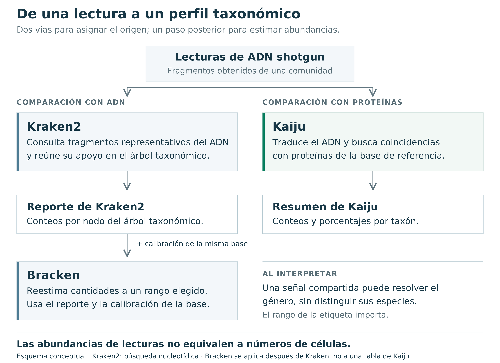
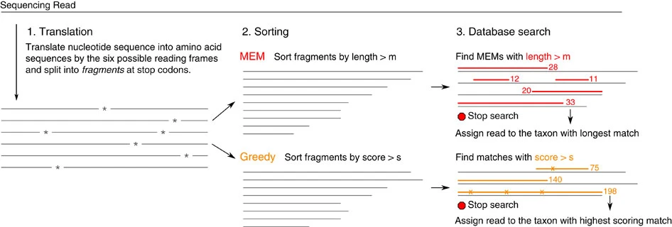
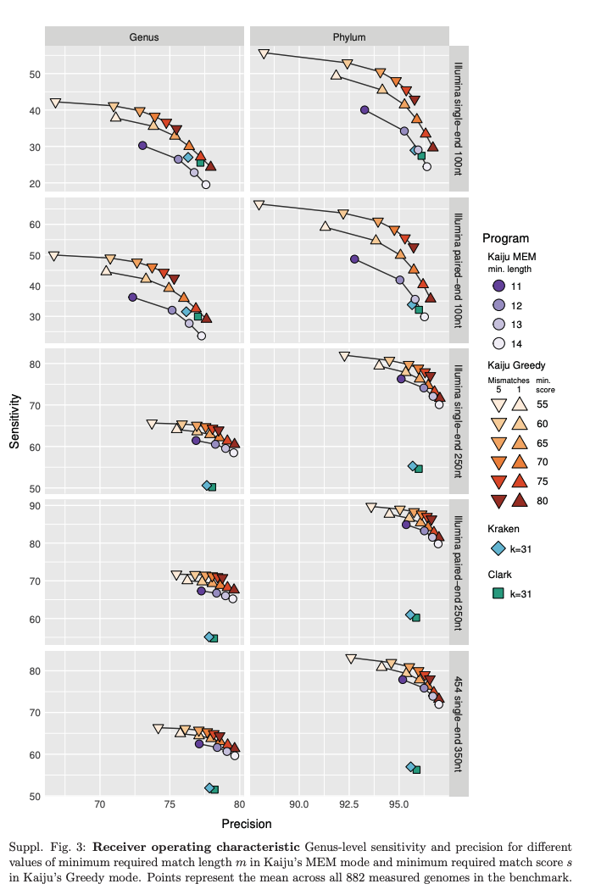
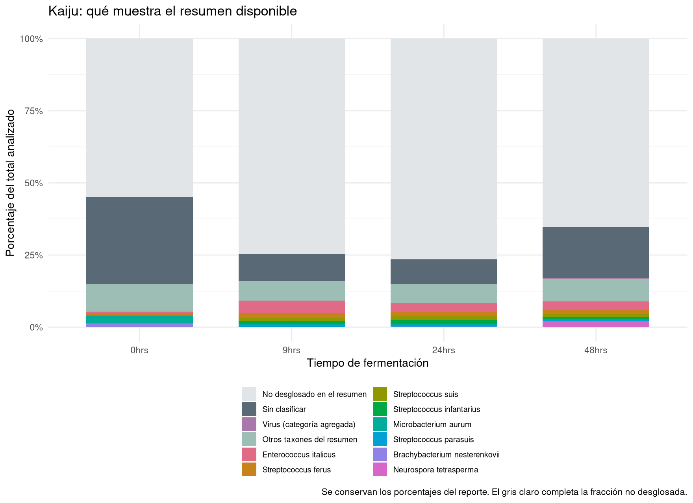
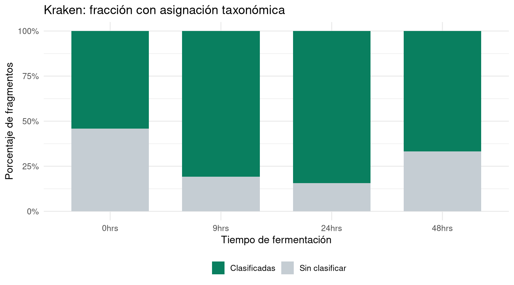
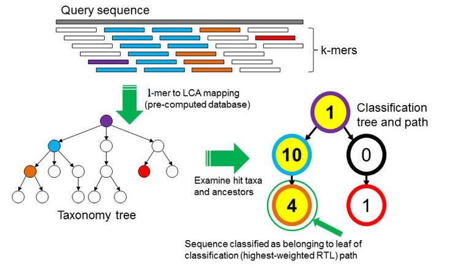

08.1. Taxonomía: ¿qué hay en mi metagenoma?
En las prácticas anteriores trabajamos con lecturas de
metagenómica shotgun del pozol: ADN de una comunidad
asociada a una fermentación de maíz. Aquí exploraremos los perfiles
taxonómicos de 0, 9, 24 y 48 horas. Los archivos
conservan sus nombres originales: 0hrs, 9hrs,
24hrs y 48hrs.
La pregunta es qué organismos están representados en esas secuencias y cómo cambia su representación entre tiempos. Una asignación taxonómica es una comparación contra referencias; no constituye por sí sola una medición del número de células ni demuestra que un organismo esté vivo.
Recorrido de la práctica: copiar reportes → reconocer sus tablas → producir dos gráficos en R → explorar la jerarquía taxonómica en Pavian → interpretar los límites de los resultados.
Aquí empieza la parte ejecutable
Los clasificadores ya se ejecutaron. Esta práctica comienza en 1. Ubícate en tu proyecto, y continúa con 2. Copia los resultados preparados. Trabajaremos con esos reportes desde nuestra cuenta del servidor. Los ejemplos completos de ejecución de Kaiju y Kraken2–Bracken quedan disponibles al final para utilizarlos en tus propios proyectos; no se ejecutan durante esta clase.
¿Qué hicieron Kaiju, Kraken y Bracken?
Un metagenoma contiene fragmentos de ADN de muchos organismos mezclados. Las lecturas no vienen con el nombre de su organismo: lo inferimos comparándolas con secuencias conocidas, organizadas en una base de referencia. En esta práctica analizamos ADN shotgun; no estamos agrupando amplicones de 16S.
Conviene separar dos preguntas: «¿de dónde puede venir este fragmento?» y «¿cuánto representa cada grupo en la muestra?». Clasificar ayuda a responder la primera; resumir y estimar abundancias, la segunda. Una lectura no equivale a una célula.
| Herramienta | Qué hace | Qué tenemos para esta práctica |
|---|---|---|
| Kaiju | Traduce lecturas y busca coincidencias con proteínas de referencia. Puede reconocer similitudes que se han conservado a nivel proteico. | Resumen por taxón, matriz de conteos y metadatos. |
| Kraken2 | Usa coincidencias de secuencia basadas en k-mers/minimizadores para asignar fragmentos a la taxonomía de su base de referencia. | Un reporte .kreport por tiempo, con una jerarquía de
clados. |
| Bracken | Reestima abundancias a un rango elegido a partir de resultados de Kraken y distribuciones precalculadas para su base de datos. | Se explica como paso posterior. Los .kreport
disponibles son resultados de Kraken, no resultados de
Bracken. |
La idea de cada método, en palabras sencillas:
- Kraken2 reúne pistas del ADN. Busca pequeñas partes
representativas de la secuencia —minimizadores de los k-mers— y
combina su apoyo para asignar un taxón. Es una forma rápida de consultar
la referencia. El parámetro
confidenceexige apoyo a la asignación; no expresa la probabilidad de que una especie esté presente. - Kaiju busca semejanzas en proteínas. Traduce el ADN en los seis marcos de lectura posibles y compara los fragmentos resultantes con proteínas conocidas. ADN diferente puede codificar los mismos aminoácidos: eso ayuda a reconocer relaciones conservadas, aunque no siempre distingue especies cercanas. Traducir ADN no demuestra actividad ni expresión.
- Bracken reestima cantidades después de Kraken. Algunas lecturas solo se asignan a un grupo amplio. Bracken combina esos conteos con cómo se espera que Kraken clasifique fragmentos de los genomas de referencia. Así estima abundancias a un rango elegido; no confirma el origen individual de cada lectura ambigua.

¿Por qué una lectura puede quedar en género y no en especie? Si dos especies comparten el fragmento observado, la evidencia puede respaldar únicamente el grupo que las contiene: su ancestro común más bajo, o LCA. Mantener esa asignación más amplia evita forzar una precisión que los datos no permiten.
¿Cuál elegir? Depende de la pregunta y de las referencias disponibles. Kraken2–Bracken es una opción para construir perfiles de abundancia; Kaiju aporta una comparación complementaria mediante proteínas. Comprueba los resultados con controles o comunidades conocidas y compara el mismo rango y denominador. Una lista más larga de especies no demuestra un análisis mejor: puede incluir asignaciones falsas. Ninguno compensa por completo una base inadecuada.
Esta síntesis sigue los fundamentos de Kraken2, Kaiju y Bracken; los manuales de ejecución se enlazan al final.
Para profundizar: búsqueda proteica, sensibilidad y precisión de Kaiju

Cambiar el modo de búsqueda o la longitud mínima de coincidencia modifica el equilibrio entre encontrar más coincidencias y evitar asignaciones erróneas. Esta figura del material original ilustra una evaluación del método; no es un resultado de nuestras cuatro muestras de pozol. Consulta el manual de Kaiju para los parámetros y la publicación original.

1. Ubícate en tu proyecto
En Visual Studio Code conectado al servidor, abre la
carpeta reads2mags_pozol que ya utilizaste para filtrado,
ensamble y binning. Luego abre Terminal → New Terminal.
Comprueba que la ventana indique una conexión remota por SSH y que la
terminal corresponda a tu cuenta.
Si seguiste la organización de la sección de espacio de trabajo, el
proyecto estará dentro de
~/curso_metagenomica_2026/bitacora/reads2mags_pozol/. Los
bloques de esta página usan esa organización y $HOME, que
se sustituye por la carpeta de tu propia cuenta. No escribas el nombre
de usuario de otra persona. Si tu proyecto está en otra ubicación,
confirma la ruta con el docente antes de continuar.
Terminal de VS Code — Bash:
cd "$HOME/curso_metagenomica_2026/bitacora/reads2mags_pozol" &&
pwd &&
ls -d data resultspwd debe terminar en /reads2mags_pozol, y
debes reconocer data/ y results/. Si estás
dentro de otra carpeta del proyecto, vuelve a abrir la raíz y crea allí
la terminal.
| Carpeta del proyecto | Uso en esta sección |
|---|---|
data/ |
Conserva los insumos iniciales de las otras prácticas. |
results/07.kaiju/ |
Reportes de Kaiju y las tablas y figuras que produciremos a partir de ellos. |
results/08.kraken/ |
Reportes de Kraken y sus nuevas tablas y figuras. |
scripts/ |
Nuestro archivo 08_taxonomia.R. |
outs/ |
Registro de ejecución y versiones de R y sus paquetes. |
Todos los comandos siguientes parten de esta raíz.
No cambiaremos de directorio dentro de R ni entraremos a
results/07.kaiju/ para ejecutar el script.
2. Copia los resultados preparados
Copia los reportes preparados a la carpeta de resultados de tu proyecto.
Terminal de VS Code — Bash:
mkdir -p "$HOME/curso_metagenomica_2026/bitacora/reads2mags_pozol/results" \
"$HOME/curso_metagenomica_2026/bitacora/reads2mags_pozol/scripts" \
"$HOME/curso_metagenomica_2026/bitacora/reads2mags_pozol/outs"
cp -r --update=none /home/pcb_01/reads2mags_pozol/results/07.kaiju \
/home/pcb_01/reads2mags_pozol/results/08.kraken \
"$HOME/curso_metagenomica_2026/bitacora/reads2mags_pozol/results/"
ls -lh "$HOME/curso_metagenomica_2026/bitacora/reads2mags_pozol/results/07.kaiju/" \
"$HOME/curso_metagenomica_2026/bitacora/reads2mags_pozol/results/08.kraken/"mkdir -p crea las carpetas que falten y conserva las
existentes. --update=none conserva también los archivos que
ya existan con el mismo nombre; esta copia no elimina otros
resultados. Los nuevos archivos pertenecen a tu cuenta.
Debes encontrar estos ocho archivos iniciales:
En results/07.kaiju/ |
Qué contiene |
|---|---|
kaiju_summary.tsv |
Una tabla larga: muestra, porcentaje, conteo, identificador y nombre taxonómico. |
matrix.tsv |
Una fila por entrada taxonómica y una columna de conteos por tiempo. |
metadata.tsv |
Correspondencia entre los nombres de las muestras y sus etapas. |
generate_matrix.R |
Script con el que se reorganizó el resumen como matriz. La matriz ya está incluida. |
En results/08.kraken/: 0hrs_sm.kreport,
9hrs_sm.kreport, 24hrs_sm.kreport y
48hrs_sm.kreport.
Si aparece Permission denied al leer
/home/pcb_01/, comparte el mensaje con el docente. Ese
problema corresponde al acceso a los insumos compartidos.
3. Reconoce las tablas antes de graficar
Terminal de VS Code — Bash:
column -t -s $'\t' "$HOME/curso_metagenomica_2026/bitacora/reads2mags_pozol/results/07.kaiju/kaiju_summary.tsv" | less -Scolumn alinea las columnas separadas por tabulaciones,
conservando los espacios de los nombres. Usa las flechas para
desplazarte y q para salir.
less -S conserva cada registro en una línea; los linajes
largos se recorren con ← y →. Si no se ve el
encabezado, pulsa g para volver al
comienzo. Identifica las columnas file,
percent, reads, taxon_id y
taxon_name.
Después abre la matriz:
column -t -s $'\t' "$HOME/curso_metagenomica_2026/bitacora/reads2mags_pozol/results/07.kaiju/matrix.tsv" | less -SSal con q y consulta los metadatos:
column -t -s $'\t' "$HOME/curso_metagenomica_2026/bitacora/reads2mags_pozol/results/07.kaiju/metadata.tsv" | less -SSal de los metadatos con q para
recuperar la terminal.
La matriz tiene 1,180 filas de datos y las columnas
Taxonomy, 0hrs, 9hrs,
24hrs y 48hrs. Son entradas del resumen,
no 1,180 especies confirmadas: también hay categorías
como unclassified y Viruses.
Dos preguntas para leer correctamente estos datos:
- ¿Qué significa un cero? Que esa entrada no tiene conteos en la matriz de esa muestra. El resumen preparado aplicó un filtro de conteo; un cero puede representar una entrada excluida por el filtro. No demuestra ausencia biológica.
- ¿Cuál es el denominador? Los porcentajes guardados
en
kaiju_summary.tsvse refieren al total analizado por Kaiju. Las filas disponibles suman aproximadamente 45.08%, 25.23%, 23.53% y 34.69%, respectivamente. Por eso, dividir cada columna dematrix.tsventre su suma cambiaría la pregunta a «¿cómo se reparte lo que quedó en esta tabla?».
La taxonomía tiene jerarquía, pero los linajes no tienen una longitud fija
Las cadenas de Taxonomy incluyen entre 1 y 16
componentes separados por ;. No podemos llamar «familia» a
la sexta posición o «género» a la séptima de todas las filas. Para un
gráfico por familia necesitaríamos una correspondencia explícita entre
identificadores y rangos. Aquí conservaremos el nombre terminal
de cada entrada del resumen, sin inventar sus rangos.
4. Prepara y guarda el script de R desde la terminal
Activa el entorno compartido
Todos los bloques ejecutables de este apartado se pegan
abajo, en la terminal Bash de VS Code, donde aparece el
nombre de tu cuenta y el signo $. Activamos el entorno que
contiene R y sus paquetes. Usarlo aquí no ejecuta un análisis de QIIME
2.
conda activate /data/env/qiime2
command -v Rscript
Rscript --version
Rscript -e 'p <- c("ggplot2", "dplyr", "scales"); print(sapply(p, requireNamespace, quietly = TRUE))'La ruta debe ser /data/env/qiime2/bin/Rscript, y los
tres paquetes deben indicar TRUE. Repite la activación al
abrir una terminal nueva. Si falta un paquete, avisa al docente para
resolverlo en la instalación compartida.
No abras una consola interactiva con R.
Ejecutaremos el archivo completo con Rscript. Tampoco hay
que pegar las líneas de R individualmente en Bash.
Crea y guarda el archivo con un solo bloque
El bloque siguiente crea y guarda
scripts/08_taxonomia.R en tu proyecto. Púlsalo con
Copiar, pégalo completo en la terminal y pulsa
Enter. Incluye la línea final RSCRIPT,
sola y sin espacios delante. Las líneas entre cat y
RSCRIPT son el contenido del archivo R; no se ejecutan
durante este paso.
El primer gráfico utiliza los porcentajes del resumen de Kaiju y
muestra en gris la fracción no desglosada. El segundo utiliza las filas
R y U de Kraken para distinguir fragmentos
clasificados y sin clasificar sin contar varias veces los clados.
Terminal de VS Code — crear y guardar el script:
mkdir -p "$HOME/curso_metagenomica_2026/bitacora/reads2mags_pozol/scripts" \
"$HOME/curso_metagenomica_2026/bitacora/reads2mags_pozol/outs"
cat > "$HOME/curso_metagenomica_2026/bitacora/reads2mags_pozol/scripts/08_taxonomia.R" <<'RSCRIPT'
# Ejecutar desde la raíz del proyecto reads2mags_pozol.
library(ggplot2)
library(dplyr)
stopifnot(capabilities("png"), capabilities("cairo"))
theme_set(theme_minimal(base_size = 13))
# 1. Leer las tablas y comprobar el orden de las cuatro muestras.
matriz <- read.delim("results/07.kaiju/matrix.tsv", check.names = FALSE)
meta <- read.delim("results/07.kaiju/metadata.tsv", check.names = FALSE)
muestras <- c("0hrs", "9hrs", "24hrs", "48hrs")
stopifnot(identical(names(matriz)[-1], muestras),
setequal(meta[[1]], muestras), !anyDuplicated(meta[[1]]))
print(dim(matriz))
print(meta)
# 2. Usar los porcentajes originales del resumen de Kaiju.
kaiju <- read.delim("results/07.kaiju/kaiju_summary.tsv")
kaiju$sample <- sub("\\.out$", "", basename(kaiju$file))
kaiju$Taxon <- sub(".*;", "", sub(";+$", "", kaiju$taxon_name))
kaiju$Taxon[kaiju$Taxon == "unclassified"] <- "Sin clasificar"
kaiju$Taxon[kaiju$Taxon == "Viruses"] <- "Virus (categoría agregada)"
print(aggregate(percent ~ sample, kaiju, sum))
principales <- kaiju |>
filter(!Taxon %in% c("Sin clasificar", "Virus (categoría agregada)")) |>
group_by(Taxon) |>
summarise(total = sum(percent), .groups = "drop") |>
slice_max(total, n = 8, with_ties = FALSE) |>
pull(Taxon)
perfil <- kaiju |>
mutate(Taxon = if_else(Taxon %in% c(principales, "Sin clasificar",
"Virus (categoría agregada)"), Taxon, "Otros taxones del resumen")) |>
group_by(sample, Taxon) |>
summarise(Porcentaje = sum(percent), .groups = "drop")
resto <- perfil |>
group_by(sample) |>
summarise(Porcentaje = 100 - sum(Porcentaje),
Taxon = "No desglosado en el resumen", .groups = "drop")
stopifnot(all(resto$Porcentaje >= 0))
perfil <- bind_rows(perfil, resto)
perfil$sample <- factor(perfil$sample, levels = muestras)
perfil$Taxon <- factor(perfil$Taxon, levels = c("No desglosado en el resumen",
"Sin clasificar", "Virus (categoría agregada)", "Otros taxones del resumen", principales))
colores <- c(setNames(hcl.colors(8, "Dark 3"), principales),
"Otros taxones del resumen" = "#9CBEB5", "Sin clasificar" = "#596976",
"Virus (categoría agregada)" = "#AA77AA", "No desglosado en el resumen" = "#E1E5E8")
p_kaiju <- ggplot(perfil, aes(sample, Porcentaje / 100, fill = Taxon)) +
geom_col(width = 0.7) +
scale_fill_manual(values = colores) +
scale_y_continuous(labels = scales::label_percent()) +
labs(x = "Tiempo de fermentación", y = "Porcentaje del total analizado",
fill = NULL, title = "Kaiju: qué muestra el resumen disponible",
caption = "Se conservan los porcentajes del reporte. El gris claro completa la fracción no desglosada.") +
theme(legend.position = "bottom", legend.text = element_text(size = 9)) +
guides(fill = guide_legend(ncol = 2))
ggsave("results/07.kaiju/01_perfil_kaiju.png", p_kaiju, device = grDevices::png,
width = 11, height = 8, dpi = 160, bg = "white", type = "cairo")
write.csv(perfil, "results/07.kaiju/perfil_kaiju.csv", row.names = FALSE)
# 3. Leer los cuatro reportes de Kraken sin contar dos veces los clados.
kraken <- data.frame()
for (muestra in muestras) {
archivo <- paste0("results/08.kraken/", muestra, "_sm.kreport")
reporte <- read.delim(archivo, header = FALSE, quote = "", comment.char = "")
names(reporte) <- c("Porcentaje", "Clado", "Directas", "Rango", "TaxID", "Nombre")
resumen <- subset(reporte, Rango %in% c("U", "R"))
stopifnot(nrow(resumen) == 2, setequal(resumen$Rango, c("U", "R")))
kraken <- rbind(kraken, data.frame(sample = muestra,
Estado = ifelse(resumen$Rango == "U", "Sin clasificar", "Clasificadas"),
Fragmentos = resumen$Clado))
}
kraken <- kraken |>
group_by(sample) |>
mutate(Proporcion = Fragmentos / sum(Fragmentos)) |>
ungroup()
kraken$sample <- factor(kraken$sample, levels = muestras)
print(kraken)
p_kraken <- ggplot(kraken, aes(sample, Proporcion, fill = Estado)) +
geom_col(width = 0.7) +
scale_y_continuous(labels = scales::label_percent()) +
scale_fill_manual(values = c("Clasificadas" = "#097F5F", "Sin clasificar" = "#C5CDD3")) +
labs(x = "Tiempo de fermentación", y = "Porcentaje de fragmentos", fill = NULL,
title = "Kraken: fracción con asignación taxonómica") +
theme(legend.position = "bottom")
ggsave("results/08.kraken/02_clasificacion_kraken.png", p_kraken, device = grDevices::png,
width = 9, height = 5, dpi = 160, bg = "white", type = "cairo")
write.csv(kraken, "results/08.kraken/resumen_clasificacion.csv", row.names = FALSE)
writeLines(capture.output(sessionInfo()), "outs/08_taxonomia_sesion.txt")
stopifnot(all(file.info(c("results/07.kaiju/01_perfil_kaiju.png",
"results/08.kraken/02_clasificacion_kraken.png"))$size > 0))
cat("LISTO: se guardaron las dos figuras y las dos tablas.\n")
RSCRIPT
ls -lh "$HOME/curso_metagenomica_2026/bitacora/reads2mags_pozol/scripts/08_taxonomia.R"La última instrucción debe mostrar el archivo con un tamaño mayor que
cero. Ya está guardado; no necesitas Ctrl + S para este
método. Si la terminal sigue mostrando > y no
regresa al indicador de tu cuenta, comprueba que pegaste también la
línea final RSCRIPT. Ese > puede ser la
continuación de Bash, no una consola de R.
Puedes abrir después scripts/08_taxonomia.R desde el
Explorador de VS Code para leerlo. Si editas su contenido arriba, guarda
con Ctrl + S antes de repetir la ejecución. Volver a
pegar el bloque de creación sustituye el contenido de ese script; los
reportes de entrada se conservan.
5. Ejecuta y abre tus figuras
Una vez creado el archivo, pega el siguiente bloque en la
misma terminal Bash, con el entorno qiime2 activo.
cd establece la carpeta de trabajo; Rscript
inicia R, ejecuta todo el archivo y termina. El registro se guarda en
outs/ y después se muestra en pantalla:
cd "$HOME/curso_metagenomica_2026/bitacora/reads2mags_pozol" &&
Rscript --vanilla "$HOME/curso_metagenomica_2026/bitacora/reads2mags_pozol/scripts/08_taxonomia.R" \
> "$HOME/curso_metagenomica_2026/bitacora/reads2mags_pozol/outs/08_taxonomia.log" 2>&1
cat "$HOME/curso_metagenomica_2026/bitacora/reads2mags_pozol/outs/08_taxonomia.log"La última línea debe decir
LISTO: se guardaron las dos figuras y las dos tablas.
Si aparece un error, el registro contiene el mensaje que necesitamos
para resolverlo. Si aparece No such file or directory para
el script, vuelve al bloque de creación del apartado 4; no hay un
análisis en marcha. Los mensajes de dplyr sobre funciones
con nombres coincidentes son informativos. Mientras R trabaja puede no
aparecer texto en pantalla. Guarda siempre el script si lo editaste
antes de repetir la ejecución.
En el Explorador de VS Code, abre con un clic:
results/07.kaiju/01_perfil_kaiju.png.results/08.kraken/02_clasificacion_kraken.png.
Las figuras se guardan en PNG para verlas directamente desde VS Code.
El mismo script genera perfil_kaiju.csv,
resumen_clasificacion.csv y el registro
outs/08_taxonomia_sesion.txt. Al repetirlo se actualizan
esas salidas del ejercicio, conservando los reportes de
entrada.
¿Qué deberías observar?

La fracción gris clara domina parte de las barras porque el resumen disponible no desglosa todo el material analizado. No es una comunidad compuesta principalmente por un taxón llamado «Otros». Es una limitación del resumen que debe quedar visible al interpretar las proporciones.

Kraken clasifica aproximadamente 54.21%, 80.83%, 84.36% y 66.71% de los fragmentos en 0, 9, 24 y 48 horas. Es una propiedad de la combinación muestra–referencia–clasificador, no un índice de diversidad ni una medida de biomasa. Con lecturas pareadas, el reporte contabiliza fragmentos o pares, no necesariamente cada extremo R1/R2 por separado.
Discute: ¿el cambio entre barras refleja un cambio de comunidad, de posibilidad de clasificar las secuencias o de ambos? ¿Qué información adicional necesitaríamos para distinguirlos?
6. Explora la jerarquía de Kraken en Pavian

Un .kreport contiene seis columnas sin encabezado:
| Columna | Significado |
|---|---|
| 1 | Porcentaje del total asignado al clado. |
| 2 | Fragmentos del clado, incluyendo sus descendientes. |
| 3 | Fragmentos asignados directamente a ese nodo. |
| 4 | Rango: U sin clasificar, R raíz,
D dominio, P filo, C clase,
O orden, F familia, G género y
S especie, entre otros. |
| 5 | Identificador taxonómico. |
| 6 | Nombre, con sangría para representar la jerarquía. |
No sumes todos los clados del reporte: una especie está incluida en su género, familia y demás ancestros. Para comparar familias se selecciona un mismo rango, no todos los niveles a la vez.
- En el explorador remoto de VS Code, abre
results/08.kraken/. - Selecciona los cuatro archivos
.kreport, pulsa el botón derecho y elige Download / Descargar. Guarda las copias en una carpeta local que puedas reconocer. - En el navegador de tu computadora, abre Pavian.
- En Data Input → Upload files / Browse, carga los cuatro reportes. Usa tus archivos, no el conjunto de ejemplo de la aplicación.
- Revisa Results Overview para reconocer las muestras y sus fracciones clasificadas. En Sample, selecciona una muestra y explora el diagrama de Sankey. Usa Comparison para contrastar las muestras a un mismo rango.
El grosor de una rama representa la cantidad asignada a ese clado; no implica interacción ecológica entre organismos. Comprueba el rango y el denominador mostrados antes de comparar paneles.
Si el servicio web no está disponible, las dos figuras generadas en R y los reportes locales permiten continuar la discusión. Pavian es un visor de estos resultados; no vuelve a ejecutar Kraken.
7. Interpreta y registra lo que aprendiste
Las muestras permiten describir diferencias de representación taxonómica entre los cuatro tiempos. Esas diferencias son compatibles con cambios de la comunidad durante la fermentación, pero los reportes por sí solos no establecen su causa ni la actividad de cada organismo.
Tenemos un perfil por tiempo y los metadatos entregados no documentan réplicas biológicas independientes. Estas cuatro muestras no bastan para una prueba del efecto general del tiempo de fermentación. Para inferir ese efecto necesitaríamos fermentaciones independientes, un diseño que contemple las mediciones repetidas y metadatos pertinentes.
En tu bitácora escribe respuestas breves:
- ¿Qué entradas del reporte cambian más entre tiempos? Distingue lo observado de la explicación biológica que propones.
- ¿Qué significan y qué no significan «sin clasificar» y «no desglosado»?
- ¿Qué tendría que cambiar en los insumos para comparar familias de Kaiju con familias de Kraken o Bracken?
Conclusión defendible: podemos comparar los perfiles reportados y reconocer sus límites de cobertura y resolución. No podemos convertir estos porcentajes en abundancias celulares absolutas, interpretar un cero como ausencia comprobada ni atribuir diferencias al tiempo con una prueba inferencial sin el diseño y la replicación necesarios.
Síntesis por equipos
Formen tres equipos. Si son dos, el primero combina las tareas A y B y el segundo desarrolla C; ambos deben revisar las dos figuras.
| Equipo | Evidencia que revisa | Pregunta que debe resolver |
|---|---|---|
| A | Perfil de Kaiju y sus porcentajes | ¿Qué cambia entre tiempos y qué limita el resumen parcial? |
| B | Kraken y Pavian al mismo rango | ¿Qué linajes cambian y cómo influye la fracción sin clasificar? |
| C | Evidencias de ambos equipos | ¿Qué proceso podría explicarlo y qué experimento permitiría distinguirlo de otra explicación? |
Cada equipo prepara una síntesis de 150 a 200 palabras y una explicación oral de tres minutos. Incluyan dos observaciones con tiempo, taxón, valor y denominador; una interpretación ecológica; una explicación alternativa; y una hipótesis futura con una predicción medible. Distingan las fermentaciones independientes de las lecturas y de las submuestras.
Al final, elaboren entre todos una conclusión y una propuesta de muestreo: qué medirían, qué compararían, qué repetirían de forma independiente y qué resultado debilitaría su hipótesis. Las observaciones de este ejercicio sirven para formularla; su comprobación requiere nuevos datos con replicación.
8. Ejecuta los clasificadores en tus propios proyectos
Material de referencia: no se ejecuta en esta clase
Estos ejemplos conservan la organización data/,
results/, scripts/ y outs/. En VS
Code, crea el archivo .sh indicado, pega el código y guarda
con Ctrl + S. Después se ejecuta con Bash en la
terminal remota, desde la raíz del proyecto. VS Code es el
editor; el cómputo ocurre en el servidor.
Antes de usarlos, activa el entorno que contenga cada herramienta.
Por ejemplo, conda activate kaiju corresponde únicamente a
un entorno que se llame kaiju; los nombres disponibles
dependen del servidor. Sustituye las rutas /ruta/real/...
por las bases instaladas y ajusta los nombres de las muestras. Los
ejemplos usan pares data/0hrs_sm_R1.fastq y
data/0hrs_sm_R2.fastq, y el mismo patrón para 9, 24 y 48
horas. En tu proyecto deben ser las lecturas que hayas seleccionado
después del control de calidad.
Usa estos bloques en el proyecto de tus nuevos datos: producen archivos con los nombres indicados y pueden sustituir salidas previas. Los reportes del taller se conservan para el recorrido de las secciones 1–7. Los dos hilos del ejemplo deben ajustarse a los recursos asignados; la memoria requerida depende de la base. Si el clúster utiliza un gestor de trabajos, ejecuta los scripts mediante ese sistema.
Kaiju: clasificar pares, añadir nombres y generar el resumen
Editor de VS Code — archivo
scripts/07_kaiju.sh:
#!/usr/bin/env bash
set -euo pipefail
db="/ruta/real/base_kaiju"
indice="$db/kaiju_db_nr_euk.fmi"
out="results/07.kaiju"
hilos=2
mkdir -p "$out" outs
for sample in 0hrs 9hrs 24hrs 48hrs; do
kaiju -t "$db/nodes.dmp" -f "$indice" \
-i "data/${sample}_sm_R1.fastq" \
-j "data/${sample}_sm_R2.fastq" \
-o "$out/${sample}.out" \
-z "$hilos" -a mem -m 13
kaiju-addTaxonNames -t "$db/nodes.dmp" -n "$db/names.dmp" \
-i "$out/${sample}.out" -u -p \
-o "$out/${sample}_names.out"
done
kaiju2table -t "$db/nodes.dmp" -n "$db/names.dmp" \
-p -c 50 -r species -o "$out/kaiju_summary.tsv" \
"$out/0hrs.out" "$out/9hrs.out" \
"$out/24hrs.out" "$out/48hrs.out"Terminal de VS Code — Bash, después de guardar:
mkdir -p outs
bash scripts/07_kaiju.sh > outs/07_kaiju.log 2>&1-a mem -m 13 selecciona MEM y una coincidencia mínima de
13 aminoácidos. Ajusta indice al archivo .fmi
de tu base; nodes.dmp y names.dmp deben
corresponder a ella. En kaiju-addTaxonNames,
-u omite los no clasificados solo del archivo con
nombres; el resumen utiliza los .out
originales.
En kaiju2table, -r species resume a nivel
de especie, -p incluye el linaje y -c 50
filtra por conteo mínimo. No se añade -u a este comando:
los no clasificados siguen formando parte del denominador de sus
porcentajes. Conserva el resumen completo recién generado; no supongas
que contiene exactamente las mismas filas que el archivo parcial del
taller.
Si tienes el script generate_matrix.R distribuido en
esta práctica, la transformación del resumen a matriz se ejecuta desde
la raíz:
Rscript results/07.kaiju/generate_matrix.R \
results/07.kaiju/kaiju_summary.tsv > results/07.kaiju/matrix.tsvEste conversor requiere el paquete tidyr y usa los
nombres de los archivos para las columnas. Comprueba esas columnas y
prepara metadatos que coincidan con las muestras de tu proyecto.
Kraken2: clasificar pares y guardar un reporte por muestra
Editor de VS Code — archivo
scripts/08_kraken2.sh:
#!/usr/bin/env bash
set -euo pipefail
db="/ruta/real/base_kraken2"
out="results/08.kraken"
hilos=2
mkdir -p "$out" outs
for sample in 0hrs 9hrs 24hrs 48hrs; do
kraken2 --db "$db" --threads "$hilos" \
--paired --use-names --confidence 0.10 \
--report "$out/${sample}_sm.kreport" \
--output "$out/${sample}_sm.kraken.reads.tsv" \
"data/${sample}_sm_R1.fastq" "data/${sample}_sm_R2.fastq"
doneTerminal de VS Code — Bash, después de guardar:
mkdir -p outs
bash scripts/08_kraken2.sh > outs/08_kraken2.log 2>&1--paired procesa juntos R1 y R2; --report
produce el resumen jerárquico y --output conserva las
asignaciones por fragmento. El umbral --confidence 0.10 es
un parámetro del ejemplo, no una probabilidad de que la especie
esté presente ni un valor universal. Mantén el formato estándar
del reporte para usarlo con Bracken. Las lecturas pareadas deben
corresponderse y estar en el mismo orden.
Bracken: reestimar abundancias a un rango taxonómico
Bracken necesita la misma base de Kraken2 que originó el
reporte y una distribución preparada para la longitud de
lectura elegida. El ejemplo de 75 bases requiere
database75mers.kmer_distrib; cambia longitud
según tus lecturas y la distribución correspondiente. Si esta falta,
debe prepararse para esa misma base siguiendo el manual de Bracken.
No se puede usar cualquier base disponible con los reportes del
taller.
Editor de VS Code — archivo
scripts/08_bracken.sh:
#!/usr/bin/env bash
set -euo pipefail
db="/ruta/real/base_kraken2"
longitud=75
nivel="C"
out="results/08.kraken/bracken"
test -r "$db/database${longitud}mers.kmer_distrib" || {
echo "Falta la distribución de Bracken para esta longitud y base." >&2
exit 1
}
mkdir -p "$out" outs
for sample in 0hrs 9hrs 24hrs 48hrs; do
bracken -d "$db" \
-i "results/08.kraken/${sample}_sm.kreport" \
-o "$out/${sample}_sm.bracken.${nivel}.tsv" \
-r "$longitud" -l "$nivel" -t 10
doneTerminal de VS Code — Bash, después de guardar:
mkdir -p outs
bash scripts/08_bracken.sh > outs/08_bracken.log 2>&1C indica clase; puedes elegir F para
familia, G para género o S para especie.
-t 10 fija el umbral de conteo previo a la reestimación.
Compara resultados al mismo rango y revisa su denominador: la fracción
estimada de Bracken no es una abundancia celular absoluta.
En cualquier ejecución, revisa el archivo .log
correspondiente en outs/. Para que tu análisis pueda
repetirse, registra las versiones de los programas, la fecha y
composición de las bases de referencia, los archivos de entrada y los
parámetros. Estos ejemplos muestran cómo ejecutar el flujo; no
afirman reproducir exactamente los reportes históricos con otra base o
versión.
Referencias y procedencia
- Organización
del proyecto y VS Code, filtrado,
ensambles
y binning:
se conserva su estructura
data/,results/,scripts/youts/. - Kaiju: manual y formato de resúmenes.
- Kraken2: formato de los reportes.
- Bracken: requisitos para reestimar abundancias.
- Pavian: manual de exploración.
- VS Code: trabajo remoto por SSH.
Las figuras de los algoritmos se conservaron del material original
del curso. Las dos figuras de resultados de esta versión se regeneran
con el código visible y los ocho archivos distribuidos desde
pcb_01. Los parámetros históricos de preparación indicaban
kaiju2table -r species -p -c 50; el resumen conservado es
parcial y se utiliza tal como está, sin reconstruir categorías no
disponibles.